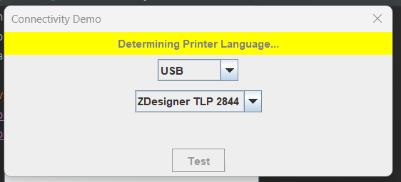
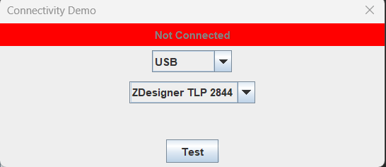

Java Application TPL 2844
//Expert user has replied.
Hello,
I'm trying to develop a Java Program that should communicate with a TLP 2844.
I cannot find VendorID and ProductID in the documentation and I cannot understand which Maven Library should i include inside of the project.
I've found probably something with an non-official dependency:
<!-- https://mvnrepository.com/artifact/fr.w3blog/zebra-zpl -->
<dependency>
<groupId>fr.w3blog</groupId>
<artifactId>zebra-zpl</artifactId>
<version>0.0.3</version>
</dependency>
But I'm not quite sure that will work and cannot connect to the printer because of the first question.
3 Replies
You can use the Link-OS SDK for PC-Java. There is a Developer Demo under the installation folder: C:\Program Files\Zebra Technologies\link_os_sdk\PC\v2.14.5198\demos\eclipse\DeveloperDemo_Desktop.zip. The SDK provide an API for discovering USB connected printers. You can get the Vendor ID and Product ID from the discovered USB string.
I've ran the project and looks like is working fine but, seems like it cannot communicate with the TLP 2844, because when i test the USB connection resulsts in status "Connected", then it tries to undestand which Language should use to communicate with and then it fails.


If i try to choose to send an image it results in "Failed to open printer XX"
[Image unavailable locally: https://developer.zebra.com/sites/default/files/inline-images/CANNOT_OPEN.png]
Is it because it's too old? is there a previous version of the Demo that would work with this kind of printer?
As Far As I Know, looks like that is not supported, in the list of the compatible printers is not present :/
I've found the exception (that is not even logged or displayed :/ )
[Image unavailable locally: https://developer.zebra.com/sites/default/files/inline-images/exception_0.png]
The demo app is based on the Link-OS SDK for PC-Java and supports ZPL, CPCL and line_print. You need to verify the device.languages setting on the TLP 2844 printer. If the setting is not ZPL, CPCL or line_print, then the print function in the demo app won't work with TLP 2844. If that's the case, you need to replace the content being sent to the TLP 2844 in the demo app with the one that can be accepted by the languages on the TLP 2844 printer.